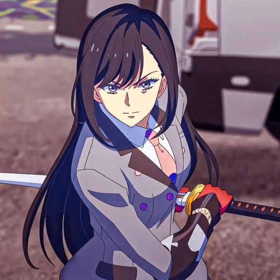
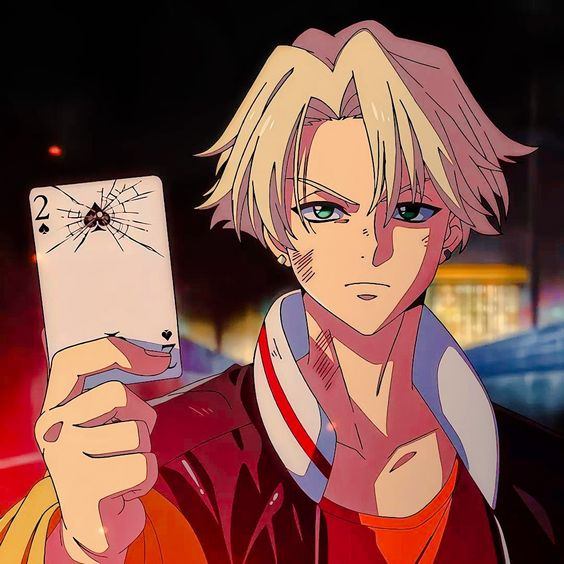
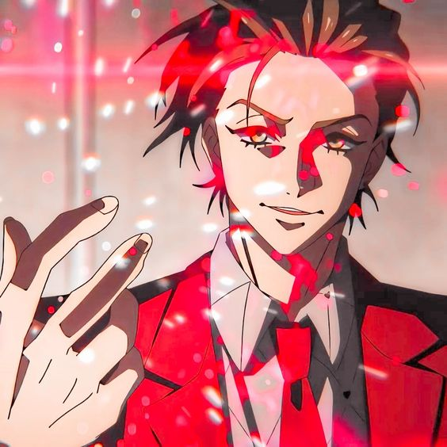
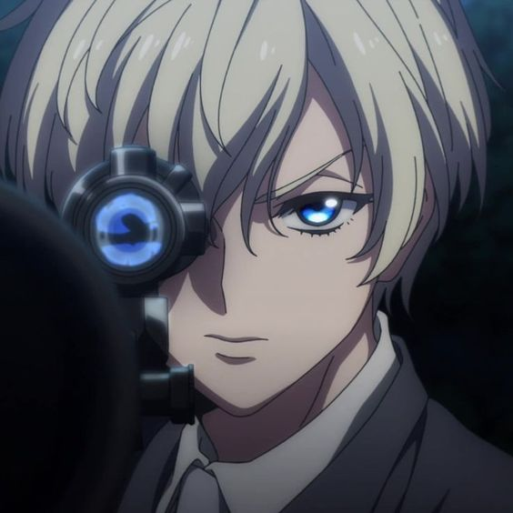

Tras descubrir que su orfanato estaba a punto de cerrar debido a problemas financieros, Finn, que vive en las calles, se dirige a un casino con la intención de hacer una fortuna. Sin embargo, Finn no esperaba que allí viviría una pesadilla con un tiroteo provocado por una misteriosa carta que proporcionaba una suerte sobrenatural a un hombre. Finn no tarda en descubrir la existencia de 52 Naipes especiales que otorgan diferentes habilidades especiales a quienes las poseen. Además, hay un grupo de Players llamado High Card a quienes el rey de Fourland ha ordenado que reúnan todos los Naipes. Finn recibirá una invitación para convertirse en el quinto miembro de High Card. Este es el inicio de una batalla en la que los Players luchan por la justicia, el deseo y la venganza.
   Después de descubrir que su orfanato estaba a punto de cerrar debido a la tensión financiera, Finn, que vivía libremente en las calles, puso rumbo a un casino con el objetivo de hacer fortuna. Sin embargo, nada podría haber preparado a Finn para la pesadilla que le esperaba. Una vez allí, Finn se encuentra con una persecución en coche y un sangriento tiroteo provocado por la tarjeta de la “suerte” de un hombre.
Finn acabará sabiendo de qué iba el tiroteo. El orden mundial puede ser controlado por un conjunto de 52 cartas de juego X con el poder de otorgar diferentes poderes y habilidades sobrehumanas a quienes las poseen. Con estas cartas, las personas pueden acceder al poder oculto del “compañero” que se encuentra en su interior.
Existe un grupo secreto de jugadores llamado High Card, al que el rey de Fourland le ha ordenado directamente que recoja las cartas que han sido esparcidas por todo el reino, mientras se pluriemplea como empleado del fabricante de coches de lujo Pinochle. Seleccionado para convertirse en el quinto miembro del grupo, Finn pronto se une a los jugadores en una peligrosa misión para encontrar estas cartas.
“Todo lo que necesitas en la vida son modales, dignidad y la voluntad de apostar por tu propia vida”. Sin embargo, Who’s Who, el fabricante de coches rival obsesionado con derrotar a Pinochle, y los Klondikes, la infame familia mafiosa, se interponen en el camino de la banda. ¡Una frenética batalla entre estos jugadores obsesionados con las cartas, alimentada por la justicia, el deseo y la venganza, está a punto de comenzar! ¿Estás preparado? ¡Qué comience el juego!